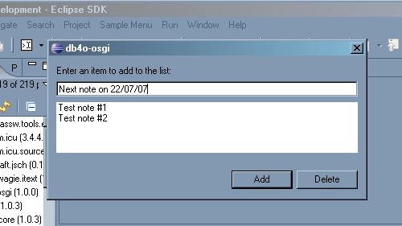

This topic applies to Java version only.
Eclipse environment makes it very easy to test plug-in projects: you do not need to exit your workspace or manually activate plug-ins.
In order to test the new MemoPlugin, open plugin.xml by double-clicking the file in Package Explorer, select Overview tab and click "Launch an Eclipse application" link.
If everything worked out right, you should see "Sample Menu" with a "Sample Action" submenu. Click "Sample Action", you should see a window like this:

Try to add and delete several items. You can close the window and
open it again to check that the changes are saved. You can also test the same
after restarting Eclipse to see that the changes are not lost between sessions.